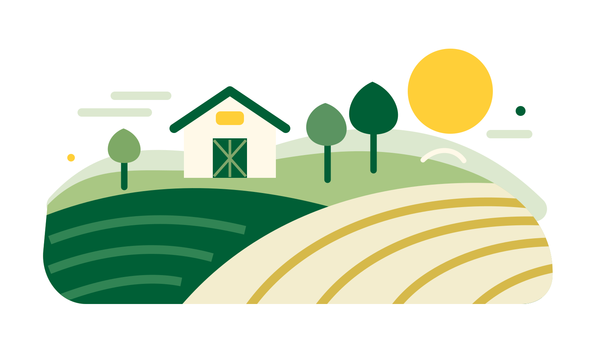
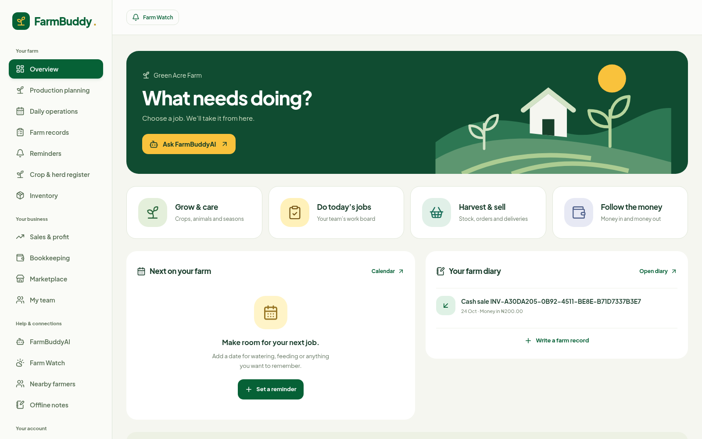
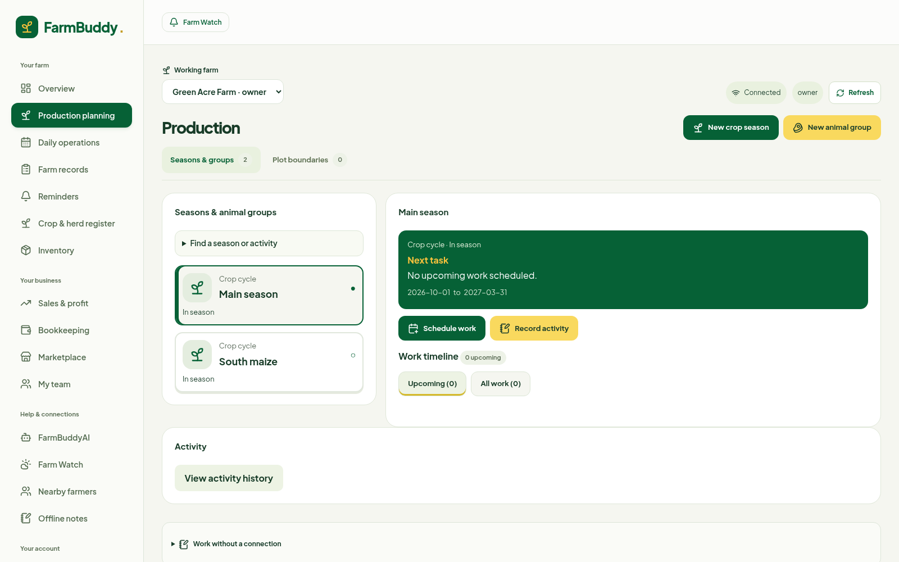
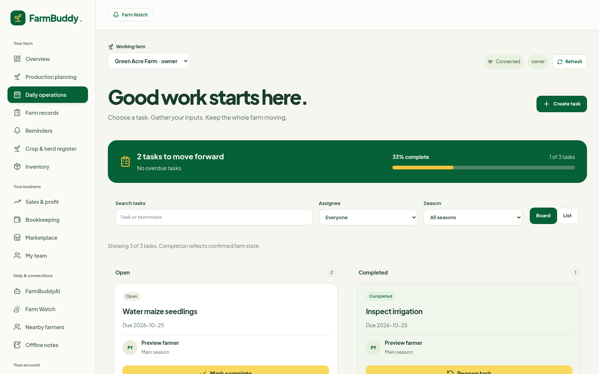
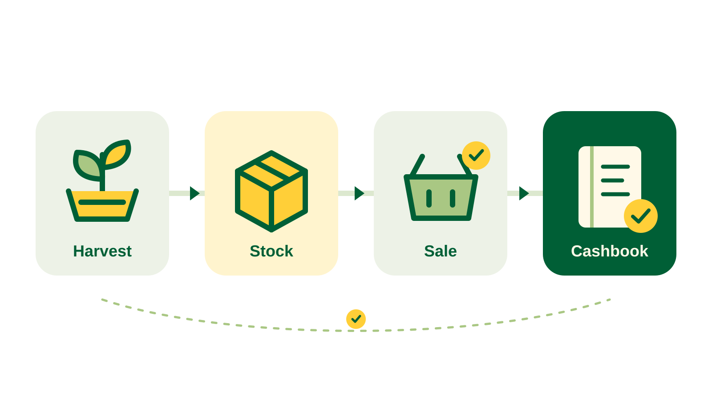
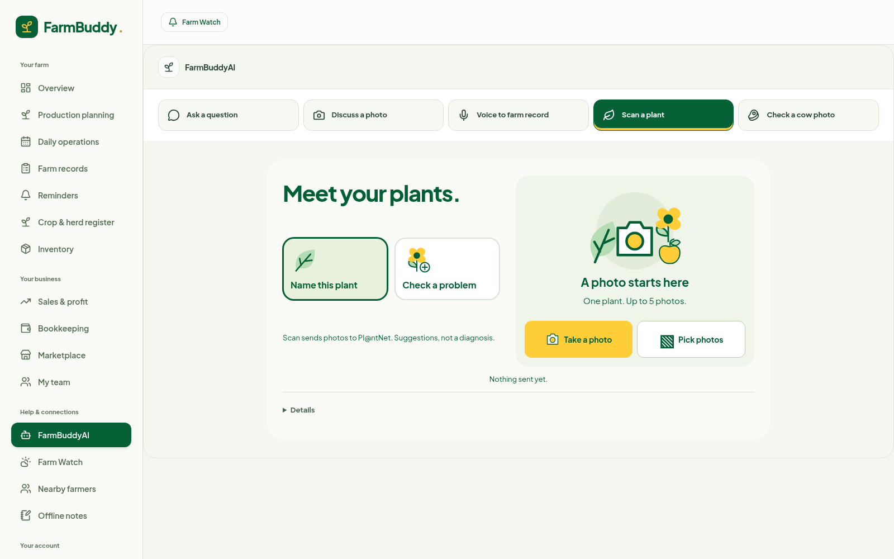
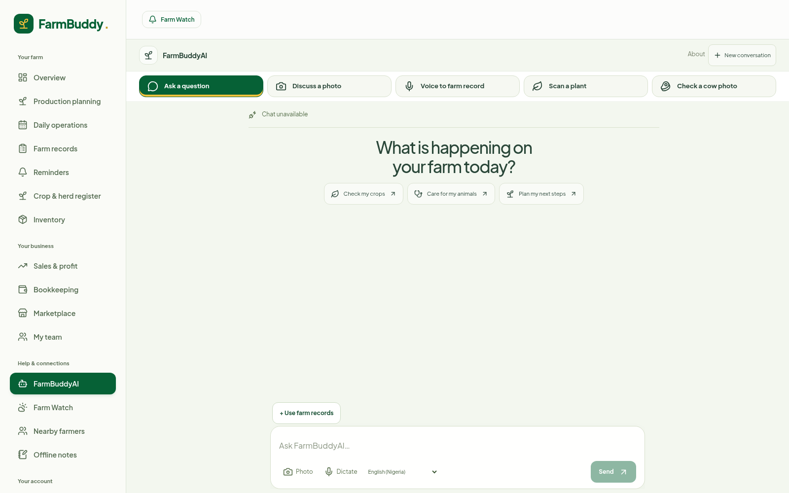

AI farm assistantPlant & crop disease checksCrop & animal planningTasks & team managementInventory, sales & bookkeepingMaps & weather forecastsFarm shop & e-commerce Buyer enquiries, not checkout

Plan · Scan · Manage · Sell
FarmBuddy.PROBLEM STATEMENT
One farm. Too many things to keep track of.
PLANNING & WEATHER
What needs attention next?
Crop dates, animal care and plot notes are scattered. Checking local weather means switching tools.
TEAM & TASKS
Who is doing what?
Verbal instructions and chat messages make it hard to track jobs, supplies used and who can change records.
STOCK & MONEY
What is left, sold or spent?
Harvests, stock, sales and expenses are recorded separately, making season income and costs hard to follow.
FARM SHOP & BUYERS
Where can buyers see my products?
Without a shop link to post or share, farmers keep resending photos, prices and contact details.
PLANT CHECKS & ADVICE
What is wrong with this plant?
Identifying plants, checking possible disease signs and finding guidance that fits the farm can be difficult.
FIELD RECORDS & CONNECTIVITY
How do I record work in the field?
Notes and photos get separated. Weak internet interrupts updates, and typing slows fieldwork.
FarmBuddy.OUR SOLUTION
ONE CONNECTED FARM WORKSPACE
Plan. Check. Sell. With FarmBuddy.
Connected management & AI
Keep plans, tasks, stock and sales together. Ask your AI Farm Buddy for guidance by text or voice, with selected farm records for context.
Plant & crop checks
Scan plant photos to identify a plant, explore possible disease matches and compare reference images. Suggestions, not a diagnosis.
E-commerce & your farm shop
List products in your own FarmBuddy shop. Post your shop link on social media or send it to buyers, who browse and contact you directly to arrange a sale.
FarmBuddy / Overview

APPLICATION SCREENSHOT · DEMO WORKSPACE
FarmBuddy.GROW & CARE
GROW WITH A PLAN
Plan the season. See the next job.
Keep plot plans, schedules and animal records together.
Crop seasonsAnimal recordsDated events
Know what to do next.
FarmBuddy / Production

APPLICATION SCREENSHOT · DEMO WORKSPACE
FarmBuddy.TODAY’S JOBS
RIGHT TASK. CLEAR OWNER.
Give every job a clear owner.
See who’s doing the job, when it’s due and what they used.
AssignmentsSupplies usedTeam permissions
See what got done.
FarmBuddy / Tasks

APPLICATION SCREENSHOT · DEMO WORKSPACE
FarmBuddy.HARVEST & SELL
Track your harvest from stock to sale.

ILLUSTRATIVE HARVEST AND SALE
01
Harvest → stock
Record what came in.
02
Confirm paid sale
Stock goes out once.
03
Cashbook updated
The sale adds income.
One confirmed cash sale. Stock and income recorded together.
FarmBuddy.YOUR FARM SHOP
Your farm becomes your shop.
Create your own farm shop. Post your shop link on social media or send it directly to buyers.
Enquiries, not online checkout.
ILLUSTRATIVE STOREFRONT · SAMPLE PRODUCTS
✳ Your farm Farm shop
GROWN WITH CARE
Fresh from our farm.
≋
Fresh maize
Product details
✳
Leafy greens
Product details
Contact the farm to enquire ↗
FarmBuddy.PLANT & CROP CHECKS
A CLOSER LOOK AT YOUR CROPS
Check your plants. Spot possible disease.
Identify a plant. Check a crop photo. Compare possible matches.
Plant identificationCrop disease checks
Possible matches, not a diagnosis.
FarmBuddy / Plant checks

APPLICATION SCREENSHOT · DEMO WORKSPACE
FarmBuddy.FARMBUDDY AI
SUPPORT CLOSE AT HAND
Your AI Farm Buddy.
Ask a question. Send a photo. Speak, check your words and send.
Farming advicePhoto & voice support
You review. You decide. AI does not change farm records.
FarmBuddy / AI assistant

APPLICATION SCREENSHOT · DEMO WORKSPACE
FarmBuddy.YOUR NEXT STEP
YOU DON’T HAVE TO DO IT ALL AT ONCE.
Smart farming. One step at a time.
Plan a season. Check a crop. Ask a question. Record a sale.
Grow & care→Jobs→Harvest→Money
✳
← → Navigate · Home / End · Swipe · O Overview · Edit the HTML source to customize this deck.